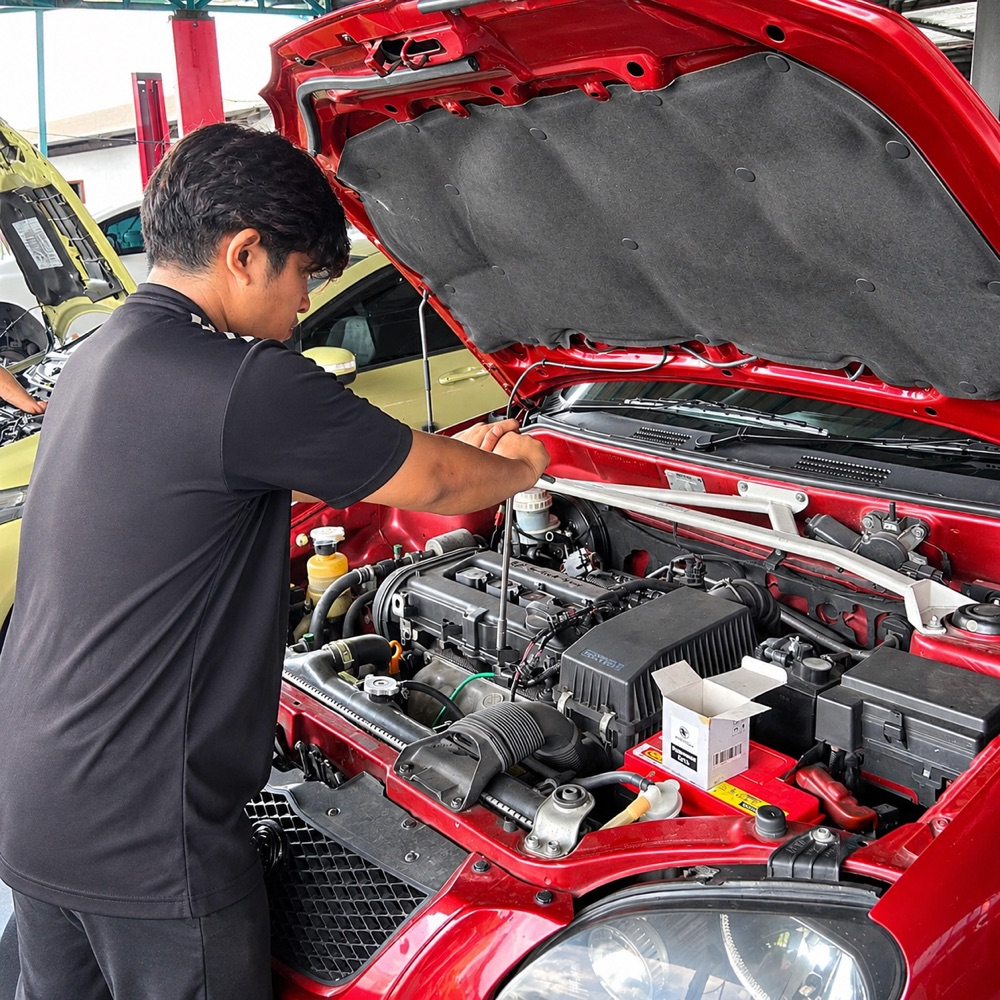
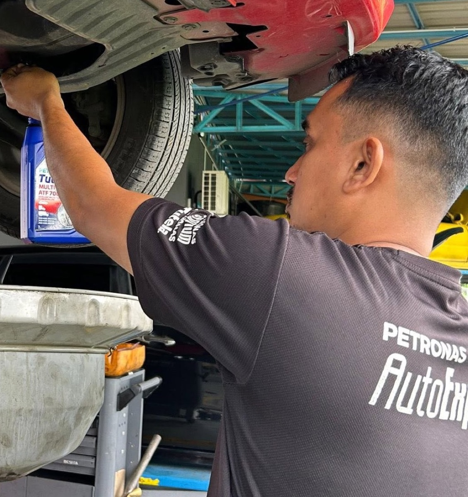
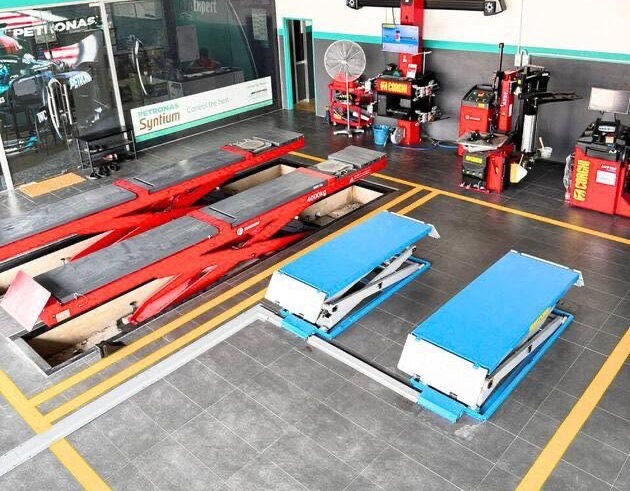
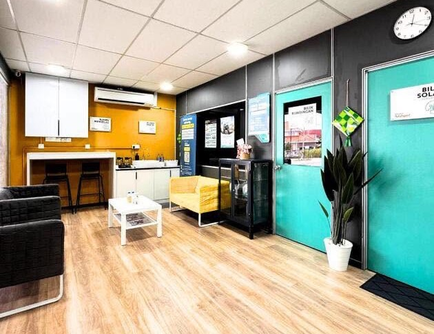

Servis
Servis enjin & gearbox kereta di Pengkalan Chepa
Enjin terasa berat, lampu amaran menyala atau gear mula tersentak? Kami menyediakan servis berkala, pemeriksaan enjin berkomputer dan penyelenggaraan transmisi untuk membantu kereta anda kekal dalam keadaan baik.

Apa yang kami buat
Pilihan servis enjin & gearbox
Harga bergantung pada model kereta dan keadaannya. Anda menerima sebut harga sebelum kerja dimulakan.
-
01
Servis berkala (minor / major)
Skop servis minor dan major bergantung pada model kereta dan jadual penyelenggaraan pengeluar. Kami cadangkan minyak pelincir PETRONAS Syntium yang sesuai dan buat pemeriksaan 41 titik keselamatan.
-
02
Tukar minyak hitam (minyak enjin)
Gred dan spesifikasi minyak PETRONAS dipilih mengikut keperluan enjin anda. Tempoh tukar minyak bergantung pada saranan pengeluar dan cara kereta digunakan.
-
03
Scan enjin berkomputer (ECU)
Lampu check engine menyala? Imbasan komputer membantu membaca kod ralat sebagai langkah awal mengenal pasti punca masalah. Pemeriksaan lanjut mungkin diperlukan.
-
04
Baiki & tukar ganti enjin
Enjin bocor minyak, berbunyi atau kurang kuasa? Juruteknik periksa dahulu, contohnya kebocoran gasket penutup injap (valve cover) atau komponen yang haus, kemudian terangkan cadangan pembaikan atau tukar ganti.
-
05
Servis gear & transmisi (ATF/CVT)
Minyak dan kaedah servis transmisi berbeza mengikut jenis gearbox, sama ada automatik (ATF) atau CVT. Kami semak spesifikasi kereta anda sebelum menukar minyak transmisi.
-
06
Overhaul kotak transmisi
Berbeza daripada servis minyak transmisi biasa. Overhaul dipertimbangkan selepas pemeriksaan menunjukkan masalah dalaman gearbox; kotak transmisi kemudian dibuka, diperiksa dan dibaik pulih.

Tukar minyak gear PETRONAS Tutela 
Ruang kerja dengan lif hidraulik 
Tunggu dengan selesa sementara kereta diservis
Diagnostik lengkap
Pemeriksaan 41 titik keselamatan
Semasa servis, juruteknik menyemak komponen utama kereta untuk membantu mengesan masalah lebih awal. Anda menerima laporan pemeriksaan dan penerangan tentang hasilnya.
- Pemeriksaan teliti: kami menilai simptom dan keadaan kereta sebelum mencadangkan tindakan
- Produk PETRONAS original dan alat ganti tulen
- Juruteknik berpengalaman, kerja dibuat ikut standard
- Tahu dahulu, baru buat keputusan: penerangan dan anggaran kos sebelum kerja diteruskan
- Ruang menunggu selesa dengan aircond dan sofa
Bila perlu datang
Tanda enjin atau gearbox perlu diperiksa
Kereta terasa kurang responsif, enjin berbunyi luar biasa atau pertukaran gear tidak lancar? Pemeriksaan awal membantu menentukan langkah seterusnya.
Panduan umum sahaja. Juruteknik kami akan sahkan punca sebenar selepas pemeriksaan.
- 01Lampu amaran enjin (check engine) menyala di papan pemuka
- 02Enjin bergetar, tersentak atau terasa kurang kuasa
- 03Sudah sampai jarak atau tempoh untuk servis berkala
- 04Gear lambat masuk, tersentak atau tergelincir
- 05Minyak enjin bocor, atau ada bunyi pelik dari bahagian enjin
Cara kami bekerja
Kami periksa, kami terangkan, anda buat keputusan
- 01
Tempah slot
WhatsApp atau telefon 017-983 7220 untuk bertanya harga atau tempah slot servis.
- 02
Pemeriksaan
Juruteknik memeriksa kereta berdasarkan servis atau masalah yang dilaporkan, termasuk pemeriksaan 41 titik keselamatan, dan menyediakan laporan.
- 03
Penerangan & sebut harga
Kami terangkan hasil pemeriksaan dan beri sebut harga. Kerja dimulakan selepas anda bersetuju.
- 04
Siap & direkod
Kerja disiapkan dan direkod secara digital. Boleh bayar melalui Setel.
Soalan lazim
Soalan yang selalu ditanya
Ada soalan lain? WhatsApp kami di 017-983 7220.
01Bila perlu tukar minyak hitam?
Ikut jadual penyelenggaraan dan spesifikasi yang disyorkan pengeluar kereta. Tempoh sebenar bergantung pada model, minyak yang digunakan dan keadaan pemanduan.
02Apa beza servis minor dan major?
Servis minor biasanya melibatkan penyelenggaraan rutin, manakala servis major merangkumi pemeriksaan atau penggantian komponen tambahan mengikut jadual dan keadaan kereta. Skop sebenar perlu disahkan untuk model anda.
03Kenapa lampu check engine menyala?
Ia boleh berpunca daripada pelbagai sistem. Imbasan komputer membantu mendapatkan petunjuk awal, tetapi punca sebenar mungkin memerlukan pemeriksaan tambahan.
04Adakah harga servis di sini jauh lebih mahal berbanding bengkel biasa?
MF Auto mengamalkan harga bengkel komuniti. Harga sebenar bergantung pada model dan keadaan kereta, dan anda akan menerima sebut harga sebelum sebarang kerja dimulakan, supaya anda boleh buat keputusan dahulu.
05Adakah alat ganti dan minyak pelincir yang digunakan tulen?
Sebagai bengkel PETRONAS AutoExpert, kami menggunakan minyak pelincir PETRONAS tulen seperti Syntium dan alat ganti yang diiktiraf.
06Boleh saya bayar guna Setel, dan adakah rekod servis saya disimpan?
Boleh. Kami rakan bengkel Setel, dan transaksi melalui Setel boleh melayakkan anda mendapat mata ganjaran Mesra. Sejarah penyelenggaraan kereta anda juga disimpan secara digital dalam sistem kami, untuk rujukan servis akan datang.
Ulasan
Pengalaman pelanggan kami
Baca pengalaman pelanggan tentang pemeriksaan, penerangan dan servis yang mereka terima di bengkel kami.
Baca lagi ulasan pelanggan★★★★★Pomen yang berkemahiran dan berpengalaman..saya buat servis tukar valve cover gasket dan seangkatan dengannya sebab ada bocor..alhamdlah smp sekarang tiada lagi bocor..
Tempah slot
Dah sampai masa servis enjin?
Beritahu kami model kereta, anggaran perbatuan dan masalah yang anda alami. Kami bantu anda dengan pemeriksaan atau servis yang sesuai. Sabtu – Khamis, 9:00 pagi – 5:30 petang.